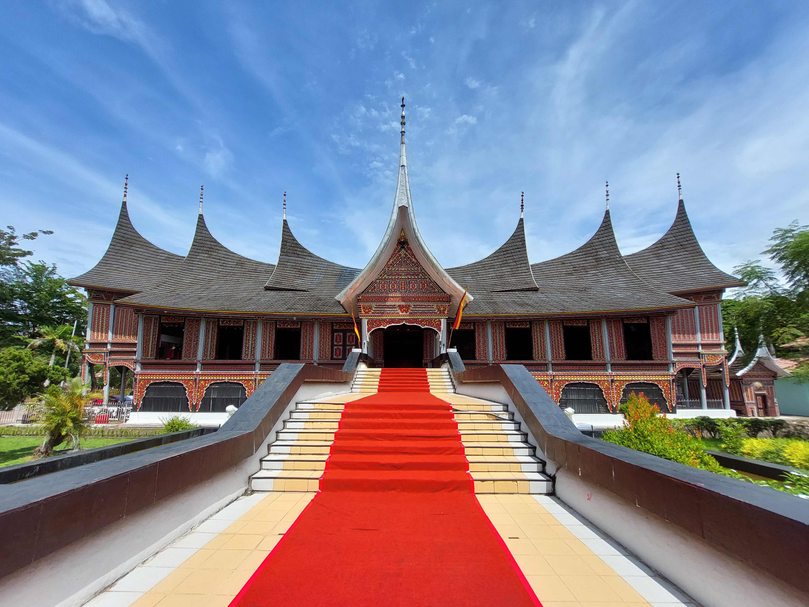

Bukan hanya hidangan lezat yang menjadi daya tarik dari daerah Sumatera Barat, namun juga ada wisata alam dan wisata sejarah yang dapat menambah pengetahuan mengenai pendidikan dan kebudayaan Minang. Salah satu objek wisata yang mengandung unsur pendidikan adalah Museum Adityawarman. Terletak di Jalan Diponegoro no. 10, Kelurahan Belakang Tangsi, Kecamatan Padang Barat, Padang, museum ini adalah salah satu bangunan penting yang mengangkat sejarah masyarakat Minangkabau dan juga peninggalan kebudayaannya mulai masa pra sejarah hingga modern.
Berbagai koleksi pernak pernik dari kehidupan masyarakat Minang bisa dilihat pada Sejarah Museum Adityawarman yang berdiri di lahan seluas 2,6 hektar dan luas bangunan sebesar 2.855 meter persegi. Beberapa patung dan monumen tampak di halaman museum yang sangat luas ini. Pada monumen tersebut berdekatan dengan patung pria yang memegang bambu runcing dan tengah dalam posisi duduk. Di bagian belakang monumen, terdapat tulisan naskah proklamasi dan tanggal 9 Maret 1950, saat dimana Padang dikembalikan kepada Republik Indonesia dengan terbitnya SK Presiden RI Serikat (RIS) no.111.
Sejarah museum Adityawarman bisa ditelusuri dari alasan pemberian namanya terlebih dulu. Pemberian nama yang sama dengan Raja Adityawarman memiliki alasan tersendiri, yaitu untuk menghormati Raja Pagaruyung yang berkuasa pada abad ke 14 Masehi. Kebesaran Raja ini diketahui dari adanya prasasti di Saruaso, Lima Kaum, Pagaruyung, dan juga melalui arca Bhairwa dan candi Padang Roncok di Sijunjung. Replika arca Bhairwa dan Amoghapasa ini merupakan bagian dari koleksi Museum Adityawarman. Kedua arca itu adalah peninggalan dari Kerajaan Dharmasraya yang pernah berdiri sebelum adanya Kerajaan Pagaruyung / Malayupura.

Arca Amoghapasa merupakan peninggalan kerajaan Singasari pemberian Raja Kertanegara dari Singasari untuk Tribhuwanaraja, penguasa Kerajaan Dharmasraya, merupakan perwujudan Awalokiteswara, boddhisatwa yang melambangkan sifat welas asih, dan diberi keterangan prasasti berukir oleh Kertanegara. Adityawarman menambahkan ukiran tersebut dengan menyatakan bahwa patung itu menjadi perwujudan dirinya.
Menurut Kitab Pararaton, Adityawarman adalah putra Dara Jingga, putri dari Tribhuwanaraja yang asalnya akan dinikahkan dengan Kertanegara dalam sejarah kerajaan Singasari, namun batal ketika Kerajaan Singasari runtuh. Siapa ayah Adityawarman masih simpang siur dengan beberapa versi, antara lain Adwaya Brahman dan Raden Wijaya dari Majapahit. Ketika dewasa, Adityawarman dipercaya oleh Raja Jayanegara di Majapahit untuk bernegosiasi dengan bangsa Mongol. Ia bahkan meletakkan arca Manjusri (bodhisatwa yang melambangkan kebijaksanaan) di Candi Jago, Malang untuk menghormati leluhurnya. Setelah Jayanegara meninggal, Adityawarman menjadi raja di Kerajaan Dharmasraya. Pusat kerajaan dipindahkannya dari Palembang ke Pagaruyung, dan nama kerajaan diganti menjadi Melayupura. Ia berkuasa pada tahun 1347 – 1375 M.
Sejarah museum Adityawarman yang ditelusuri dari proses penamaannya dapat membuat kita memahami mengapa nama tersebut dipilih. Dari sejarah singkat tentang masa kekuasaannya, dapat disimpulkan bahwa Adityawarman adalah seorang pemimpin yang cakap, negosiator unggul dan tidak melupakan leluhurnya. Oleh karena itu sangat wajar jika namanya diabadikan sebagai nama sebuah museum yang menyimpan sejarah masyarakat Sumatera Barat. Bentuk bangunan museum pun merupakan rumah panggung atau Rumah Gadang bernama Rumah Bagonjong dengan atap yang berbentuk seperti tanduk kerbau bertumpuk, dan tujuh puncak gonjong yang ada di atap museum ini.
Nama Adityawarman diberikan secara resmi pada tanggal 28 Mei 1979 walaupun museum ini sudah diresmikan pada 16 Maret 1977 oleh Mendikbud Prof. Dr. Sjarif Thayeb. Pembangunan museum dimulai pada tahun 1974 yang bertujuan untuk menyimpan benda – benda bersejarah atau cagar budaya Minangkabau, Mentawai dan Nusantara. Berdasarkan perlunya keberadaan sebuah wadah untuk memelihara warisan budaya di Sumatera Barat agar tidak hilang atau mengalir ke luar negeri, maka museum ini dibuat.
Pada saat itu Kepala Perwakilan Depdikbud Propinsi Sumbar, Amir Ali menyampaikan keinginan Gubernur Sumbar Harun Zain kepada pemerintah pusat untuk membangun “Balai Kebudayaan Minangkabau”. Direktorat Permuseuman kemudian menanggapi dengan membangun museum regional di ibukota propinsi. Untuk para peminat sejarah, ada pula sejarah museum batik Yogyakarta dan sejarah museum benteng heritage yang menarik.